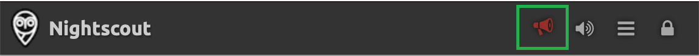
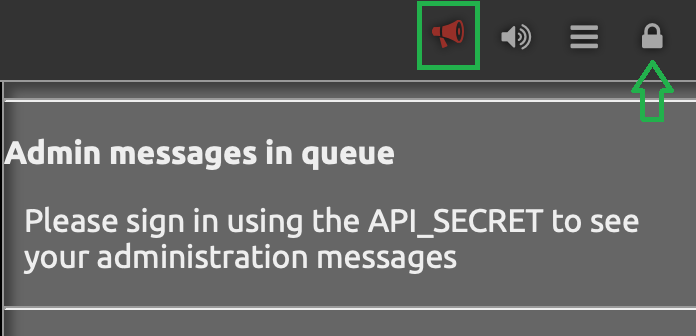
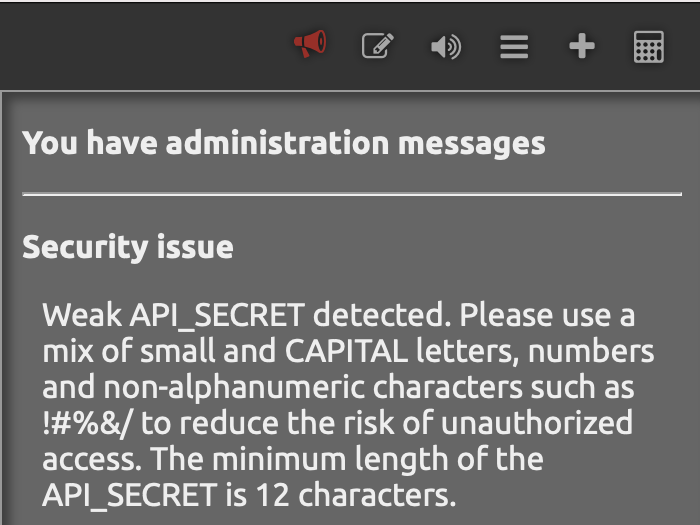
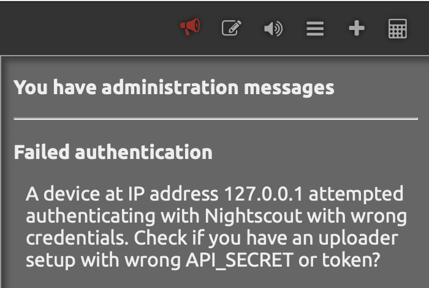
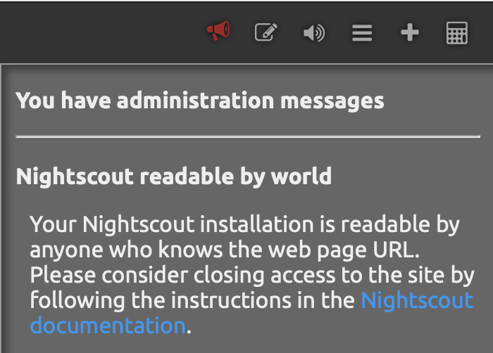
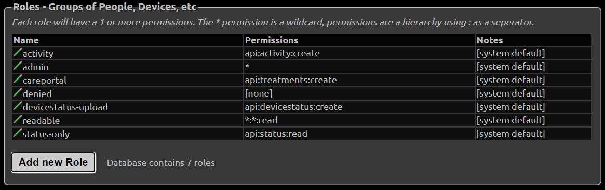

Nightscout Security and Privacy
Nightscout security model is based on the following assumptions:
The users of Nightscout only use it to process information about themselves or someone they’re legally responsible for and thus own all of the data being stored in Nightscout.
Given the user / operator of Nightscout is assumed to have full ownership of the data stored in Nightscout, it is assumed the user has full responsibility around the use and sharing of the data.
Nightscout provides a set of APIs for reading and writing data into the Nightscout database. Nightscout itself does not directly interface with any devices. Nightscout users should verify any applications using the APIs to process the data in Nightscout have been implemented in a secure fashion and have data validation processes in place in case an unauthorized user gains access to Nightscout and alters the data.
If unauthorized users gain access to the server being used to host Nightscout, the database used with Nightscout or any device used to access the Nightscout APIs, the entire system’s security has to be considered compromised and the user must assume any data stored in the system might be altered and thus should not be trusted.
Personal use only
The system has not been designed for scenarios where a third party operates a Nightscout installation on behalf of others and if such installations are made, both the users and operators of such installations need to understand there is a large body of legislation across the world that covers use cases and data storage enabled by Nightscout and the liability issues around such installations are extremely complicated.
Security and safekeeping
Use the same email address for all accounts so you’ll have access to all your accounts after installation. Do not use a disposable email address - use something you know you can access later.
Use a safe password for all accounts related to Nightscout, including the password for the email account for the accounts. We highly recommend using a password manager such as 1Password and allowing it to generate the passwords for you.
Do not reuse the same password for all your accounts.
Do not use your Dexcom or CareLink user name or password for Nightscout components.
Do not use the API_SECRET for the Atlas database password.
Do not share the API_SECRET or access tokens with administration privileges to anyone, ever. If you need to grant access to Nightscout, see below for instructions how to create access tokens for this purpose.
Do not use Nightscout or any related applications on rooted and/or otherwise compromised devices, and ensure you always have the latest operating system and virus protection updates installed.
HTTPS and certificate errors
One of the core security mechanisms on web is the SSL encryption applied to HTTP connections. When installed to Heroku, Nightscout by default forces connections to use HTTPS, thus ensuring the connection is encrypted. For secure Nightscout use, it’s crucial that you assume something is wrong if you ever see your browser complain the SSL certificate of your Nightscout site does not match or work as expected by the browser. This can be a sign of a so called Man In The Middle (MITM) attack and proceeding with the problematic certificate will subsequently compromise your Nightscout site. If you see an error related to SSL, you should immediately rename the site (see below for instructions).
Administration messages
Nightscout 14.2 introduced a new feature called Admin Notifies, which can warn you about issues with Nightscout installation and security issues.
If you see the red megaphone in your navigation bar, it means you have messages in the queue.
{kind=link}
You have to be authenticated to Nightscout using the API_SECRET or an authentication token that has administration access to read the messages.
{kind=link}
There are multiple types of messages that might be shown:
I’m seeing a message about the API_SECRET being weak
{kind=link}
This message is shown when cryptographic analysis if the API_SECRET shows the secret is easily guessable by a computer and should be changed. Things you can do to have this message go away:
The API_SECRET must be at least 12 characters long, but making it even longer makes it more secure
Use a mix of small and CAPITAL letters, numbers and non-alphanumeric characters such as !#%&/()= in the API_SECRET Note: make sure your uploader and downloaders can handle special characters, you might need to express them using Percent encoding for example an API_SECRET like
D0n't*H4ck@M3%would be expressed as:D0n%27t%2AH4ck%40M3%25Consider generating the API_SECRET using a password manager
I’m seeing a message about authentication failures
{kind=link}
This is highly likely caused by you having installed an app on some device with the wrong API_SECRET or access token, and the app trying to authenticate to your Nightscout, or you or one of the family members have just tried to sign into Nightscout with wrong credentials.
If you have apps running that use the Nightscout REST API, check you have the correct API_SECRET and/or access token configured to each.
If the message keeps appearing unexpectedly or is reported against multiple IP numbers, it’s possible someone is trying to brute force attack your installation and guess your API_SECRET to be able to modify data in your Nightscout. In this situation, we highly recommend you rename the Nightscout site to change it’s address and pick a name that’s hard to guess.
I’m seeing a message Nightscout is readable by the world
{kind=link}
This means the site shows the CGM data to users who can guess the site address without authentication. Note Nightscout never allows data to be saved or edited without authentication, so this is not necessarily a problem depending on how hard your site address is to guess and how you want the information to be shared.
If you want to have the site require authentication, read the “How to Turn Off Unauthorized Access” section below.
Renaming the Nightscout site
See the instructions in the specific platform section for a new Nightscout creation.
Once done, make sure all apps (uploaders and downloaders) are updated accordingly.
{kind=link}
{kind=link}
Create Authentication Tokens for Users
Note: authentication tokens are also called access tokens
Changing API_SECRET
If you change your API_SECRET all your tokens will change. Make sure you update your devices and send the new token link to those you allowed to access your Nightscout
To access the Authentication options, click the settings panel (three horizontal bars in the top right) in your website and select Admin Tools. The Authentication options are at the top of the Admin page. (Note: you must be logged in with your API SECRET to access these tools.)
{kind=link}
You will see several predefined roles:
{kind=link}
Roles
admin: full accesscareportal: can view the site and make CarePortal/treatment entriesreadable: read-only access; no ability to make CarePortal/treatment entries. This user CAN see reports and profile information.denied: no access (this role only works if theAUTH_DEFAULT_ROLESsetting is alsodenied. You can’t have a site that is readable to everyone and create a “denied” token for a specific user.)devicestatus-upload: used by devices
Hint
There is currently no way to limit a user so that he cannot view the Reports section if he has access to the site. Time/date-based roles are not currently possible.
Create a Token
Click the “Add New Subject” button.
{kind=link}
Fill in the name of the subject and the “role” you are giving this subject (from the list of roles shown above). Note you should only grant the
readablerole for users who do not need to save or edit data in Nightscout. For example, you might want to share the site to a school nurse, but not have him able edit the data.
{kind=link}
An
admintoken is necessary for AAPS to upload using the API V3.
{kind=link}
Click save.
The token will be shown. You can use it in two different ways:
Copy the token URL (right-click on it in the browser and select the option to copy the link address) and provide it to the user (e.g., paste it into an email). If the user enters the entire URL (with token), the token will be in effect.
Copy the token string (in the example below
school-a595d5f0aeff64c0) and use it for authentication at site opening, instead of the API secret (Nightscout minimum version 14.1.0 required).
{kind=link}
You can also add the token to the site URL to authenticate using a token. Your site link with token will look like this:
https://yoursitename.yourplatform.com/?token=school-a595d5f0aeff64c0
Anybody with this link can use your Nightscout with the role defined for this token.
Hint
If the user copies only your core URL into a browser, and your site is readable by default, the token will be bypassed. (Possible strategies to ensure the user puts the role-based URL into a browser include using a tinyurl or bit.ly.)
You can edit a subject by clicking the edit icon, making changes, and saving.
You can delete a subject by clicking the red
Xicon to remove the subject from the list.
See how to setup your downloaders (followers) with a secured site.